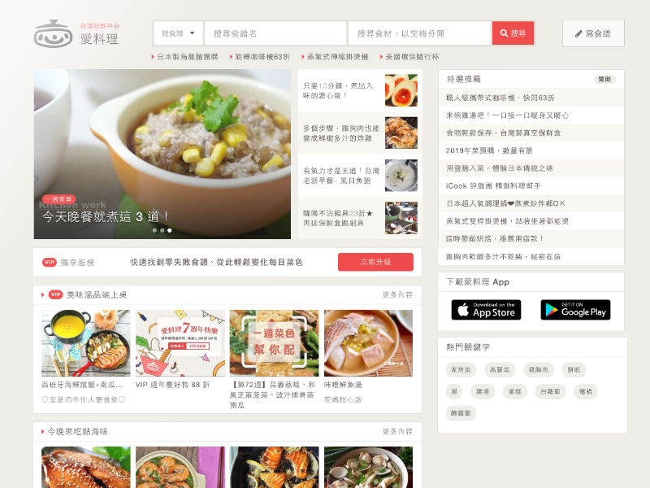

Licious Fantasy's Story
Product Service
Company History
Career Opportunities
Licious Fantasy's Story
愛料理出自於三個大男生的巧思。他們熟能於網路和程式語言，但對於料理和廚房的事，他們可沒有你想像得如此心靈手巧。然而面對時下的社會環境，他們擁抱著的都是一顆想要把事情做好的心。
默契相投的三個男生找到了一種全世界共通的語言，橫跨了空間與時間軸，用來乘載與傳遞人與人之間的愛與暖意，那即是「料理」。於是他們開始了一趟看似摸不著邊際的料理創業旅程。
旅程裡，從廚房煎鍋裡的肉餅滋滋作響，到現代時尚的料理廚藝教室 ; 從小留學生思念家鄉味，到頂級的異國美食享受，逐漸地他們懂得料理可以是美學，可以是言語，人們對於料理可以有百般的畫面與想像，但其核心的精神不會改變 ＿ 調味和訴說著人與人間的愛與溫情。於是正名了愛料理。
Product Service
本公司是台灣最大料理生活平台，每天推出各式最新、最熱門的食譜與實用文章，精選販售眾多質感用品、家電及食材，讓大家一起享受美好生活。 愛料理的App 與網站收藏功能同步，讓你/妳輕鬆接收飲食和生活上的新知，收藏喜愛的食譜並隨身攜帶。愛料理App限定採買清單，不漏買菜，採買更順利。做菜時用愛料理App看食譜，螢幕不會變暗，讓妳/你做料理更方便，資訊不中斷！
由專業編輯團隊每天分享各類實用資訊，其中以飲食趨勢分析、當季食材特色與料理技巧、營養學等系列文章為主，美容保養、生活相關知識與小撇步為輔，360度全方位幫助妳/你解決生活上的困擾，提供妳/你可能不知道的知識及最新的資訊！
妳/你是否曾站在貨架前，看著讓人眼花撩亂的商品而不知道如何選起？愛料理會員試用推薦藉由會員們實際試用產品後給予的真心評論，提供妳/你購買商品時最公正的參考，讓愛料理會員告訴妳/你，哪些才是優質商品 ！

Company History
2014.2
2015.4
2017.8
2019.6
2020.1
2014.2 草創集結
愛料理出自於三個大男生的巧思。他們熟能於網路和程式語言，但對於料理和廚房的事，他們可沒有你想像得如此心靈手巧。然而面對時下的社會環境，他們擁抱著的都是一顆想要把事情做好的心。
2015.4 正式上線
默契相投的三個男生找到了一種全世界共通的語言，橫跨了空間與時間軸，用來乘載與傳遞人與人之間的愛與暖意，那即是「料理」。於是他們開始了一趟看似摸不著邊際的料理創業旅程。
2017.8 第一次改版
旅程裡，從廚房煎鍋裡的肉餅滋滋作響，到現代時尚的料理廚藝教室 ; 從小留學生思念家鄉味，到頂級的異國美食享受，逐漸地他們懂得料理可以是美學，可以是言語，人們對於料理可以有百般的畫面與想像，但其核心的精神不會改變 ＿ 調味和訴說著人與人間的愛與溫情。於是正名了愛料理。
2019.6 加入精品購物
本公司是台灣最大料理生活平台，每天推出各式最新、最熱門的食譜與實用文章，精選販售眾多質感用品、家電及食材，讓大家一起享受美好生活。 愛料理的App 與網站收藏功能同步，讓你/妳輕鬆接收飲食和生活上的新知，收藏喜愛的食譜並隨身攜帶。愛料理App限定採買清單，不漏買菜，採買更順利。做菜時用愛料理App看食譜，螢幕不會變暗，讓妳/你做料理更方便，資訊不中斷！
2020.1 正式上櫃
由專業編輯團隊每天分享各類實用資訊，其中以飲食趨勢分析、當季食材特色與料理技巧、營養學等系列文章為主，美容保養、生活相關知識與小撇步為輔，360度全方位幫助妳/你解決生活上的困擾，提供妳/你可能不知道的知識及最新的資訊！
Career Opportunities
我們持正向信念，相信資訊科技和社群網路可以對社會環境產生貢獻、改善人們的生活品質。我們正在做的事情與提供的服務，貼近人們的生活日常，從根本開始美善人們的生活。
如果你有著對於烹飪料理的滿腔熱情，如果你也同我們認為飲食是生活中的美好事物，或者你對於網路產業懷抱興趣，歡迎你，加入我們。我們期盼能添加你獨特的魅力於愛料理團隊，一同料理出暖人心頭的美好味道。